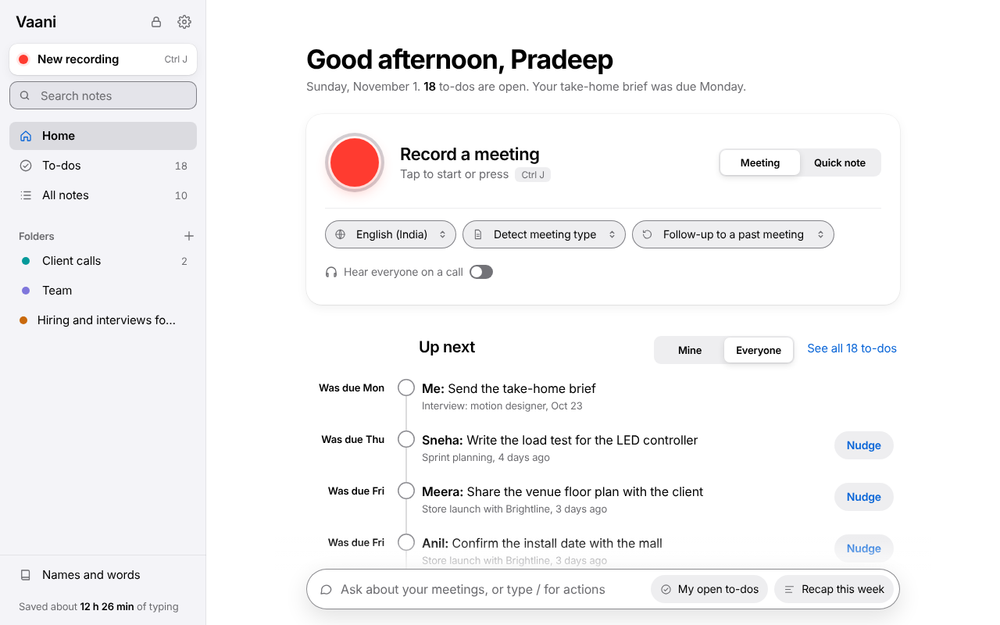
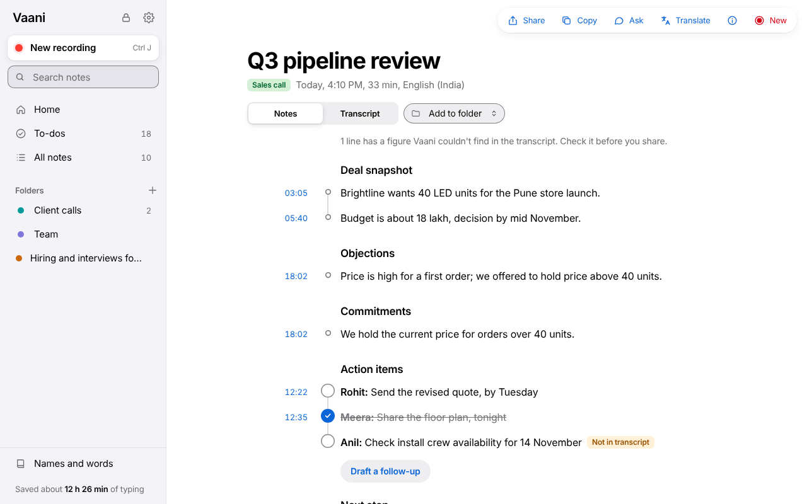
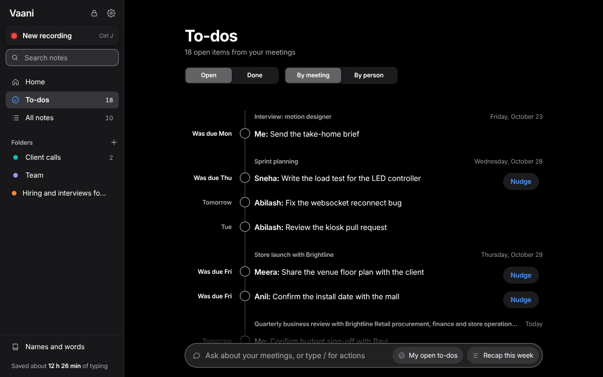
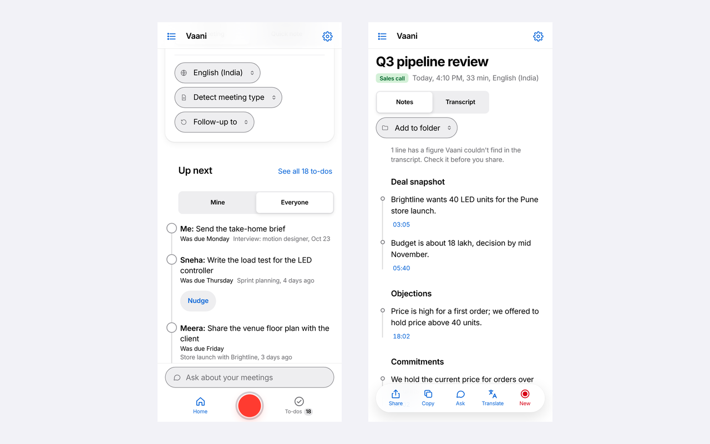
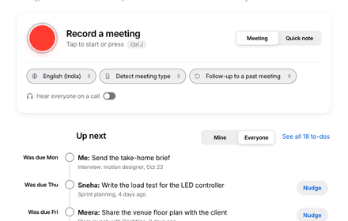
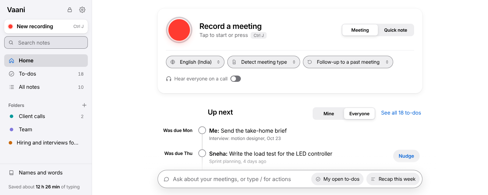

Vaani Chrome Web Store art
Real captures of the app, taken from the live build with sample data. Right-click an image to save it.






Real captures of the app, taken from the live build with sample data. Right-click an image to save it.





